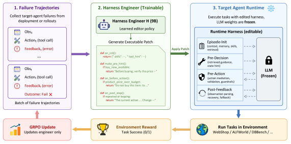
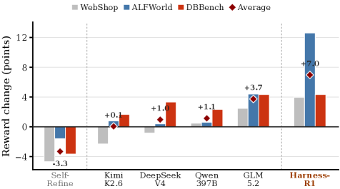

Harness-R1: Training the Harness Engineer, Not the Agent
TL;DR
- "Harness-R1: Learning to Edit Executable Runtime Harnesses from Agent Failure Trajectories" (arXiv 2608.02276; Shuai Shao, Kangning Zhang, Qingyao Li, Shijian Wang, Hao Wang, Wenxiang Jiao, Yuan Lu, Yi Guo, Weiwen Liu, Weinan Zhang) is, per the authors, the first method that makes failure-conditioned, lifecycle-wide editing of an existing executable runtime a learned capability: a dedicated 9B "harness engineer" reads batches of a frozen agent's failures and writes validated executable patches to the runtime around it.
- The engineer is trained in two stages — cold-start SFT on ~1,000 teacher-proposed, validation-filtered edits, then online GRPO where the only reward is the realized success change from rerunning the frozen target on the same task batch with the patch installed. No KL penalty, no format bonus: a patch is worth exactly what it does.
- Across WebShop, ALFWorld, and DBBench, patches from the trained engineer lift a frozen Qwen3.5-9B from 44.3% to 53.6% average success (+9.3 points), beating every prompted frontier editor (best: GLM-5.2 at 48.8%); the editing policy transfers to 20 unseen target models (+7.06 points average, no per-target retuning) and keeps helping (+5.0) even after the target itself is fine-tuned.
Why this matters
This tracker has been circling one question all year: when an agent system improves, should the gradient flow into the model or into the harness? Microsoft's "Training Agents Inside Their Harnesses" put RL on the model while holding the scaffold fixed; the Sakana/Berkeley recursive-harness work and the Harness Handbook treat the harness as the thing to improve but do it with frozen prompted models; and the "Model or Harness" failure-mode taxonomy (added to the tracker today) argues most production agent bugs live on the seams between model and scaffolding, so the repair often belongs to the harness side.
Harness-R1 is the missing quadrant: it applies weight-updating RL, but to a separate engineer model whose actions are harness edits, while the deployed agent stays frozen. That's an attractive operating point for anyone who can't retrain the production model (API models, compliance-frozen checkpoints, multi-tenant targets) but accumulates failure trajectories for free during deployment. And the headline negative result matters just as much: prompting GPT-5.5-class frontier models to do the same editing job is unreliable, because they optimize for plausible-looking patches and never observe whether a patch actually raises task success. Outcome-grounded training beats scale at this job — a trained 9B engineer outperforms every prompted frontier editor.
The core idea
Let \(A\) be a frozen target agent (model + base runtime) and \(B=\{x_i\}_{i=1}^{n}\) a batch of tasks in environment \(E\). Running the unmodified agent yields baseline trajectories \(\tau_i^0\) and rewards \(R_i^0\). A deterministic extractor keeps only failed episodes and compacts task constraints, selected action–observation excerpts, outcomes, and needed environment state into a failure packet \(s_B\). The engineer \(H_\theta\) reads the packet once and emits a batch-conditioned executable overlay \(P\) — it never answers tasks or joins rollouts.
The overlay hooks the agent loop at four lifecycle points, touching only inputs and outputs around the frozen policy: (i) episode initialization (starting context/state), (ii) pre-decision (augment context with guidance and interface constraints), (iii) pre-action (a guardrail that may canonicalize, rewrite, or veto an action before it reaches the environment), (iv) post-feedback (inspect observations, trigger recovery on stalls). Patches are validated before installation; invalid patches have no effect.
After installation, the same frozen target reruns every task in \(B\) — including the ones that already succeeded, so regressions count. The engineer's reward is the full-batch performance difference:
where \(R_i^P\) is task \(i\)'s reward under the patched runtime (the cases form of \(r(B,P)\) is transcribed from the paper's Eq. 1). This reward is non-differentiable and only observable after an edit changes agent behavior — hence RL.
Cold-start SFT first gives the engineer a prior over valid, executable edits: a GPT-5.5 teacher proposes serialized editing responses \(y_j^T\) for failure packets, each validated on the frozen target, keeping at most one executable, complete, non-regressive response per packet (~1,000 examples), trained with standard next-token prediction
Online GRPO then optimizes realized utility: sample \(K=8\) candidate patches per packet, evaluate each by a full-batch rerun, and normalize rewards within the group,
with \(\mu_B,\sigma_B\) the mean/std of the eight same-packet candidates. The sequence-level advantage is shared across all response tokens and plugged into a token-averaged clipped surrogate
where \(\rho_{k,t}\) is the token importance ratio against the old policy and \(w_{k,t}=\operatorname{clip}(\exp(\ell^{\mathrm{tr}}_{k,t}-\ell^{\mathrm{ro}}_{k,t}),0,2)\) is a truncated importance weight correcting the training-engine vs rollout-engine log-prob mismatch. Only engineer parameters \(\theta\) update; the target never does.
How it works

Figure 2 from the paper: the failure-to-edit-to-rerun loop. The trainable engineer (left) and the frozen task agent (right) are strictly separated; the patch touches episode-init, pre-decision, pre-action, and post-feedback hooks only.
# Offline: cache base runs
for each task batch B:
run frozen target A with base harness -> trajectories tau^0, rewards R^0
extractor(failures) -> failure packet s_B
# Stage 1: cold-start SFT
teacher proposes edits y^T for packets; validate on frozen A
keep <=1 executable, complete, non-regressive edit per packet
SFT engineer H_theta on ~1,000 (s, y^T) pairs
# Stage 2: online, outcome-grounded GRPO
repeat until budget exhausted:
sample update bundle U from cached records (B, s_B, R^0)
for each (B, s_B, R^0) in U:
sample K=8 patch candidates P_1..P_K ~ H_theta(. | s_B)
for each P_k: parse + validate
if valid: install P_k, rerun A on ALL of B -> R^{P_k}
r_k = mean_i(R_i^{P_k} - R_i^0)
else: r_k = 0
A_hat_k = (r_k - mean_k r) / std_k r # group-relative
update theta on clipped surrogate (truncated IS weights, no KL)
Two details are load-bearing. First, the objective is same-batch and transductive: the patch is scored on the very tasks whose failures it saw, with no iterative refinement within an instance and no persistent patch memory across batches — which controls task composition but raises the overfitting question the held-out experiment then has to answer. Second, invalid/no-op/incomplete patches get zero reward rather than being filtered out, so validity itself is under optimization pressure.
Results

Figure 1 from the paper: matched-baseline reward changes across the three benchmarks; diamonds mark the equal-weight average. Prompted frontier editors are unstable; the outcome-trained engineer is consistently positive.
- Main result (Qwen3.5-9B target; 500/500/300 test tasks on WebShop/ALFWorld/DBBench): average success 44.3% → 53.6% (+9.3 points), largest gain on ALFWorld (40.6% → 53.2%). The outcome-trained engineer beats the supervised-only engineer by 7.1 points — the RL stage, not the SFT prior, carries most of the value.
- Versus alternatives: best prompted frontier engineer (GLM-5.2) reaches 48.8%. Fixed prompt strategies are not reliably positive: ReAct +3.2, Self-Refine −2.5 (Reflection's 55.8% is a cumulative two-episode protocol, not comparable).
- Co-evolution: after direct SFT of the target agent (59.2% avg), a target-specific engineer still adds +5.0 points to 64.2% — harness editing doesn't saturate once the actor improves.
- Cross-target transfer: applied to 20 unseen target models (each supplying its own failures, receiving a fresh patch), benchmark-averaged gain is +7.06 points, every target-level average positive; 56 of 63 target–benchmark cells improve and the 3 regressions are ≤2.0 points.
- Held-out tasks: from just 10 observed failures, one patch applied to 1,270 unseen tasks yields +8.9±1.5 points, positive on every seed — while Qwen3.5-397B and DeepSeek-V4-Pro as editors average negative (−4.3±2.5, −0.4±3.6) under the identical protocol.
- Lifecycle ablation: full patch +8.9 over no intervention; disabling pre-action mediation costs 3.9 points and post-feedback recovery 3.3, versus 0.9/0.6 for episode-start/pre-decision — with the dominant hook depending on environment (pre-action on WebShop, recovery on ALFWorld). The authors caution these are conditional effects, not a universal ranking.
How it connects
- [Training Agents Inside Their Harnesses (Microsoft)] is the exact dual: gradient into the model, harness fixed. Harness-R1: gradient into the harness (via an engineer), model frozen. The pair brackets the co-evolution design space that the [Long-Horizon Agents as Harness × Optimization Co-Evolution] survey maps.
- [Recursive Harness Self-Improvement (Sakana/Berkeley)] and [Harness Handbook] improve harnesses with prompted frozen models; Harness-R1's frontier-editor baselines are essentially that approach, and its data says training the editor beats prompting a bigger one.
- [Model or Harness: 41 Agent Failure Modes] (added today) gives the diagnostic vocabulary — failures live on component-interaction edges; Harness-R1 is the repair loop for the harness-side edges, with pre-action and post-feedback (the tool/environment seams) empirically carrying most of the value.
- [SkillHone] (also today) evolves the content the agent loads (skills) via persistent decision history without any weight updates; Harness-R1 trains an engineer that edits the runtime code. Both keep the target frozen; they differ in what accumulates (artifacts + history vs. engineer weights).
- [RLSVR] and [ISO] are the RLVR-infrastructure backdrop: Harness-R1's reward (rerun deltas on a frozen target) is another instance of manufacturing a verifiable signal where none exists natively.
Critical take
The transductive objective is doing quiet work: during training, a patch is scored on the batch whose failures it was written from, so the reward measures "fix these tasks" rather than "fix this agent." The held-out experiment is the right response and its result is genuinely strong (+8.9 from 10 failures), but it covers one target and three classic academic environments — WebShop, ALFWorld, and DBBench are small, resettable worlds with short episodes, far from the SWE-agent-scale harnesses where lifecycle edits would be most valuable and reruns most expensive. And the cost profile deserves scrutiny: every GRPO group requires up to 8 full-batch reruns of the target, which is affordable at 500-task batches with cheap episodes and painful anywhere else. The "no persistent patch memory across batches" design also means the system re-derives fixes rather than accumulating them — the engineer's weights are the only memory, which is elegant for RL but wasteful at deployment; a SkillHone-style history layer on top seems like the obvious hybrid. Finally, the four hook points are hand-chosen; "lifecycle-wide" is really "these four seams," and the ablation shows the payoff is concentrated in two of them. None of this undercuts the central finding — outcome-grounded training makes a small editor beat prompted frontier models at a job that looks like it should be about raw capability — but the scaling story to production harnesses is still unwritten.
If you remember three things
- The harness is now a trainable component: a separate 9B engineer, post-trained with GRPO against same-batch rerun deltas, edits four runtime hooks around a frozen agent — +9.3 points average over three benchmarks.
- Outcome beats plausibility: prompted frontier editors (GPT-5.5, GLM-5.2, DeepSeek-V4-Pro...) write valid-looking patches that often don't help or actively hurt; the trained 9B engineer beats them all because its reward is realized task success, not textual reasonableness.
- The gains sit at the action and feedback seams: pre-action mediation and post-feedback recovery carry ~7 of the 8.9 ablation points — consistent with the "failures live on the model–environment edges" thesis of the failure-mode taxonomy work.